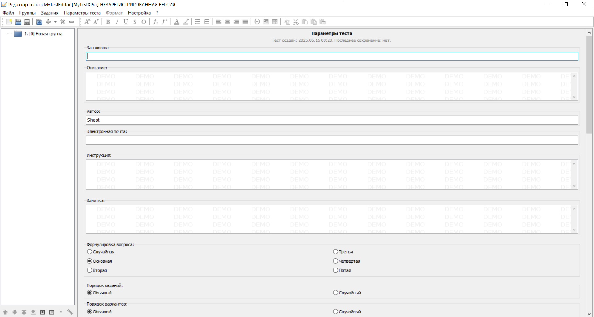

My MyTestXPro - это система программ для создания и проведения компьютерного тестирования знаний, сбора и анализа результатов. С помощью программы MyTestXPro возможна организация и проведение тестирования, экзаменов в любых образовательных учреждениях (вузы, колледжи, школы) как с целью выявить уровень знаний по любым учебным дисциплинам, так и с обучающими целями.

Функциональные возможности
-
Программа работает с различными типами вопросов
Одиночный и множественный выбор
Установление порядка следования
Установление соответствия
Ручной ввод чисел или текста
Выбор места на изображении
Перестановка букв
Заполение пропусков
- Неограниченное количество на создание групп и заданий в тесте
- Форматирование текста: возможность форматировать текст, прикреплять изображения, таблицы к вопросам и ответам.
Достоинства
- Универсальность: поддержка разнообразных типов вопросов и гибкая настройка параметров теста.
- Удобство хранения и переноса: все данные находятся в одном файле, что значительно упрощает хранение, копирование и перенос тестов.
- Гибкость настройки: возможность адаптировать тесты под конкретные вопросы.
Недостатки
- Риск потери данных: в случае повреждения файла теста может быть потеряна вся информация о нем.
- Совместимость: возникновение проблем с совместимостью с другими программами для создания тестов.
- Ограниченные возможности коллективной работы: данный формат может затруднять одновременную работу нескольких редакторов над одним тестом.
- Экономия времени и усилий: возможность воспользоваться уже готовыми шаблонами для создания тестов, квизов и так далее.
Мастер-класс. Создание тестов в программе MyTestXPro
My TestXPro – универсальная и удобная программа для создания тестов, имеет широкие возможности настройки и автономное хранение данных.